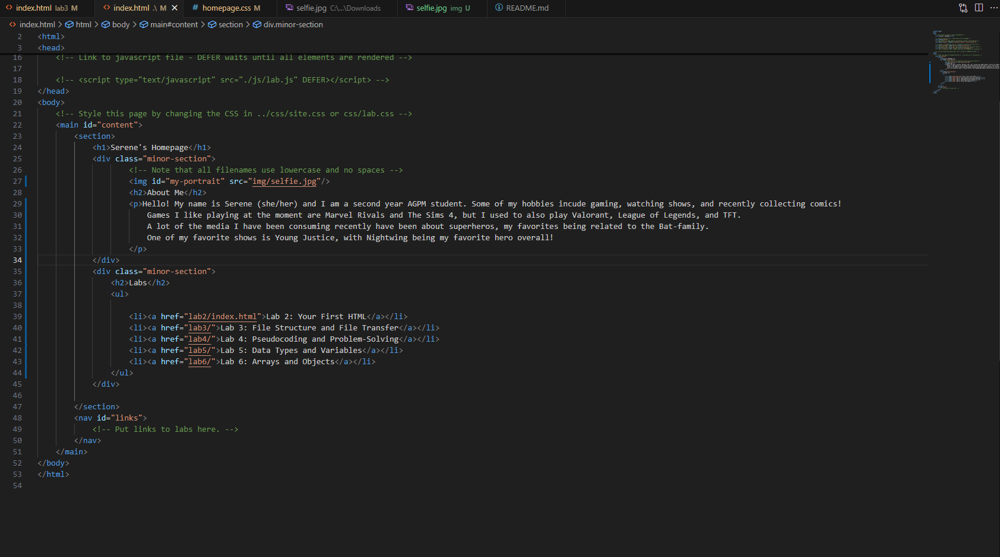
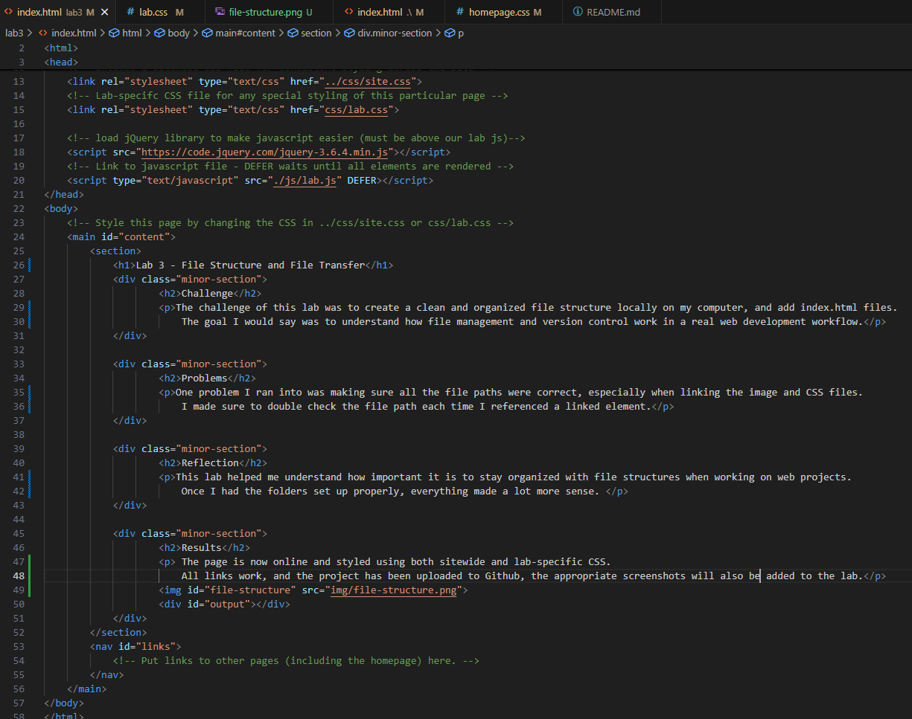

Lab 3 - File Structure and File Transfer
Challenge
The challenge of this lab was to create a clean and organized file structure locally on my computer, and add index.html files. The goal I would say was to understand how file management and version control work in a real web development workflow.
Problems
One problem I ran into was making sure all the file paths were correct, especially when linking the image and CSS files. I made sure to double check the file path each time I referenced a linked element.
Reflection
This lab helped me understand how important it is to stay organized with file structures when working on web projects. Once I had the folders set up properly, everything made a lot more sense.
Results
The page is now online and styled using both sitewide and lab-specific CSS. All links work, and the project has been uploaded to Github, the appropriate screenshots will also be added to the lab.
Screenshots from Lab 3
Above is an image of my organized file structures.
Featured above is my HTML source code made to edit my homepage.
Captured above is how my homepage index.html looks in a browser.
Above is an image of the index.html code in the editor for Lab 3.
The image above features the Lab 3, Task 3 code as displayed in a browser.